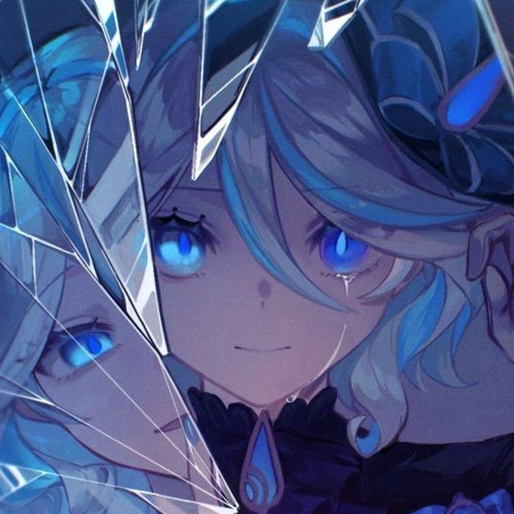

From velvet curtains and golden stage lights, to shimmering fountains and teacups left half finished, the Court of Fontaine is filled with things that tell a grand story. Furina spent five hundred years playing a role and learned that the brightest spotlight is the one we share, so this is what we always want our stage to be, a place where we bring out the star in each other.

our ever-evolving stage is a reflection of furina's drama - redemption in every curtain call.